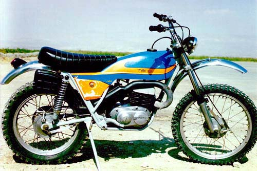

Restoration of a
Bultaco Alpina 350
The restored Bultaco Alpina 350. (Photo courtesy of Mostafa Azizi)Back in 2000 I restored a Bultaco Alpina 350. Here are some questions you may ask, with answers:
Why a Motorcycle?
Apart from the pure fun of it, I have decided that a trail motorcycle is the most efficient means of transportation for my exploration work in Rig-e Jenn. I have tried 4x4s and camels before (not to mention airplanes). Motorcycle gives you the mobility you need in this unexplored environment and saves you precious time. Yes, it is not that environment friendly (will leave tire traces along the way, and the noise is ugly compared to the enchanting sound of the kavir breeze), but then, this will be a one time venture.
Why Bultaco?
I started looking for a bike, till I met Mr. Kaboli. He was once a representative of Bultaco in Iran. He suggested that we use his old Alpina 350, "because it is the best trail bike ever built." This was an offer I couldn't refuse, especially since there was no charge!
| Why Restoration?
Mr. Kaboli's Alpina was abandoned for more than 18 years. It was sitting in his backyard at the mercy of the elements. Surely the bike needed more than a "light service". The piston and the cylinder, for one, were completely worn out due to overheating. I consulted several Bultaco sites on the Internet for guidance and was drawn to this restoration job as a result. I had the cylinder re-bored, and two piston rings custom-made because we didn't have original Bultaco rings here. Body and cylinder and cylinder head where powder-coated. Gasckets were replaced with original ones from Bultaco. Rear lights were replaced, also with originals. The handle bar and some other chrome pieces were chrome-plated. The seat was almost totally rebuilt. The only part I didn't mess with was the gear-box. I didn't have the time, nor the confidence, to tackle with it. |  |
Did I ride it?
In October 2000 I rode it from Tehran to the city of Tonkabon in north of Iran, and back: a roundtrip of 400+ km. Apart from an unusual appetite for gas, it posed no problems. I changed the original carburetor with a Japanese one which reduced the consumption to almost half. Where is it now?
In Dec. 2000 I left the bike in Tehran, when I moved to the USA. Mr. Kaboli took it back, and as far as I know, it is back where it was before the restoration, waiting for a ride.
And the pictures?
Here are some Pictures of the restoration.
Who helped me?
My friend Behrouz Ziaii has helped me with this restoration.
Mr. Zarrin did the powder coating of the frame, the cylinder, and the cylinder head, free of charge.
Reza Najafi-Manesh had the handle bar plated and exhaust pipe powder-coated in Fanar Lool, a factory that he manges.
Brothers Mehdi and Arash Delshad helped with the electrical wiring.
Tim Weaver from Hugh's Bultaco has also helped me with technical tips via email. Thanks Tim!


Copyright © Ali Parsa 1998-2011
All rights reserved